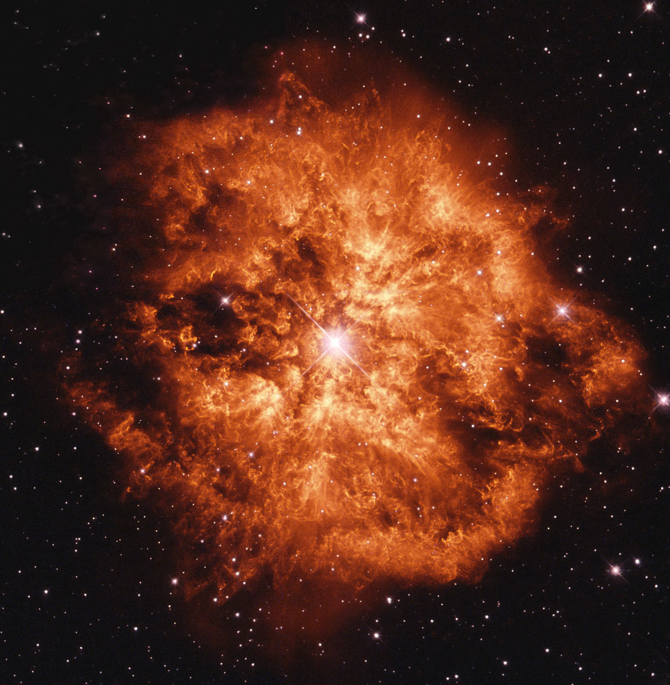

About Me
Education:
B.S. in Physics, California State University, Long Beach, 2014
B.S. in Applied Mathematics, California State University, Long Beach, 2014
M.S. in Physics, University of Pittsburgh, 2016
Research Interests:
Stellar Winds, Spectroscopy, Radiative Transfer, Blue Supergiants, Luminous Blue Variables,
Yellow Supergiants, Wolf-Rayet Stars, Type II / Ibc Supernovae, Computational Physics
Publications: Include ADS link!
Using Shell Models to Investigate Clumping in the O7Iaf+ Supergiant AzV83 (in prep)
Research

WR 124 - Hubble Legacy Archive, NASA, and ESA
The majority of my work involves using the publicly available, radiative transfer code CMFGEN,
developed and maintained by my research advisor, Dr. John Hillier.
This code was designed to solve the radiative transfer and statistical equilibrium equations in spherical geometry. It has been designed for application to W-R stars, O stars,
and Luminous Blue-Variables. With this code, I am currently working on the following projects:
Project I: Using "Shells" to characterize clumping in stellar winds
Radiatively driven winds of hot, massive stars have been shown to be inherently unstable, leading to the formation of an inhomogeneous
structure called clumps (for an overview, see Puls et al. 2008).
Further, synthetic spectra from radiative transfer codes that do not correct for clumping have been shown to be inconsistent with observations.
As such, the analysis of massive star spectra requires an allowance for the inhomogeneous properties of their winds, especially if our goal is
to derive accurate stellar quantities such as mass-loss rates and abundances.
Dr. Hillier and I are implementing the use of "Shells" - highly dense regions embedded in the wind - to treat clumping in CMFGEN. Doing so
allows us to study clump-sensitive features in the star's spectra and make comparison with the volume-filling factor approach, a method
widely adopted in radiative transfer code for treating clumping. Currently, a paper is in prep for publication (Using Shell Models to Investigate Clumping in the O7Iaf+ Supergiant AzV83)
that uses the Shell method to sythesize spectra for comparison with those observed from an O star,
AzV 83.
In an upcoming paper, we'll expand on this method and make comparison with spectra observed from a Wolf-Rayet star,
HD 50896 .
Project II: Incorperating Convections to CMFGEN for NLTE modeling of Yellow Supergiants
Another problem that I have started looking into involves yellow supergiants (YSGs) - an intermediate phase in a 20 - 40 M☉
star's evolution that is short-lived (on the order of 1% or less of its lifetime). Their numbers and location on the evolutionary path are
sensitive to the uncertainties in the treatment of their winds and convection. As Kippenhanh & Weigert (1990, p. 468) puts it \[The yellow supergiant]
phase is a sort of magnifying glass, revealing relentlessly the faults of calculations of earlier phases." More recently, a puzzle
came to light when a Type IIb Supernova (SN), SN IIb 2011dh, was observationally confirmed to have a YSG progenitor (see
Maeda et. al. 2014 ). Type IIb SNe are thought to have
progenitors of evolved stars, such as Wolf-Rayet stars.
From our current understanding of the star's YSG phase, it represent a key transition phase where its mass-loss rate will help dictate
future stages of its life. However, CMFGEN is ill-equiped to model the atmosphere and winds of these objects since convective cells are expected
to form just below the photosphere. Thus, I'm currently working on implenting convection to CMFGEN and test it with another code that has already
implented, ATLAS9.
Contact
Email: BLF40@PITT.EDU
Address: